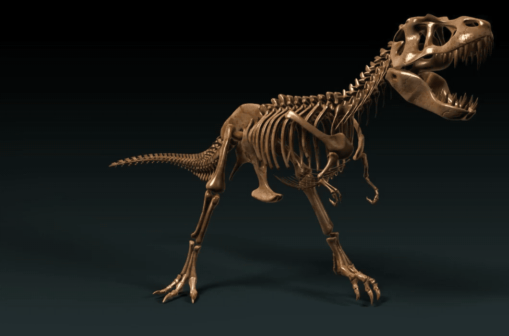

Penemuan baru-baru ini menyebabkan semakin sulit untuk menentukan karakteristik khas dinosaurus, hampir semua dinosaurus yang telah ditemukan memiliki modifikasi kerangka tertentu yang berbeda dengan karakteristik nenek moyang archosaurus. Namun, beberapa kelompok dinosaurus memiliki karakteristik yang dianggap sebagai karakteristik Dinosauria; ciri yang dimiliki oleh semua dinosaurus awal dan kemudian diteruskan pada keturunannya. Dalam taksonomi, ini disebut dengan sinapomorfi.
S. Nesbitt mengemukakan temuannya mengenai keterkaitan antara sinapomorfi archosaurus dengan dinosaurus:
Nesbitt juga menemukan sejumlah sinapomorfi lainnya antara archosaurus dengan dinosaurus, di antaranya juga terdapat pada silesaurids, yang menurut Nesbitt mirip dengan Dinosauria, termasuk trokanter anterior yang besar, metatarsal II dan IV dengan panjang yang sama, kurangnya kontak antara iskium dengan pubis, terdapatnya cnemial crest pada tibia, proses menaik pada astragalus,dan lain sebagainya.